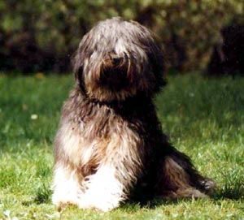

#4506 1 2005-09-24T03:39:20Z Ngaged What kind of pets do you guys have? I have six dogs and three cats, and I'll post up my cat's picture now.

Oops! Sorry, it's big...
#103128 2 2005-09-24T03:49:54Z Trogdor007 aww... here's my new puppy. bad pic.
Attachment (lost): post-20-1127533794.png
#103133 3 2005-09-24T04:05:02Z 7! My pets ran away 2 years ago.
#103143 4 2005-09-24T05:05:56Z nevermore I don't have a picture of my dog, but he's a tibetan terrier. He looks almost exactly like the following image, except for the fact that his hair is a bit shorter.

#103152 5 2005-09-24T05:38:12Z Killer i have two gerbils but i don't have a digital cam

#103153 6 2005-09-24T05:44:45Z Ryuk I like Ngaged and Trog's animals. I'll post a picture of my animals sometime.
#103158 7 2005-09-24T07:35:50Z Code_Master I have a cocker spanniel pup
but no pic. i will get on that
#103159 8 2005-09-24T08:18:53Z Code_Master Here we go i found what i was looking for
Attachment (lost): post-20-1127549933.jpg
#103160 9 2005-09-24T08:22:21Z Ryuk I have 4 cats. One is about as old as I am.
#103202 10 2005-09-24T12:48:09Z 7! Does fishing count? And I used to keep salamanders years ago.
#103207 11 2005-09-24T13:15:52Z jflash 2 dogs, 1 cat. And get them to sit still enough for a picture?! *raucous laughter*
But I'll try, though.
#103218 12 2005-09-24T13:39:20Z Trogdor007 another dog pic. I wish I had a digital camera. I took these with video camera.
Attachment (lost): post-20-1127569160.png
#103222 13 2005-09-24T13:43:55Z jflash It looked at first like you were holding the dog up against a wall, and I was going to be like "That is a tiny dog!"
But then I saw it was from above.

#103310 14 2005-09-24T18:20:15Z Bigblargh I am blessed with two beautiful cats. Here's one...
Attachment (lost): post-20-1127586015.jpg
#103312 15 2005-09-24T18:25:14Z Ryuk It looked at first like you were holding the dog up against a wall, and I was going to be like "That is a tiny dog!"
But then I saw it was from above.
Hehehe

I love animals!
#103313 16 2005-09-24T18:30:44Z Code_Master Having a pet is the best
even if it does destroy your good runners

i love my dog!!!!!
#103316 17 2005-09-24T18:55:43Z jflash #103318 18 2005-09-24T19:17:37Z Ryuk That's stupid. I love beef jerky! Why do people become vegetarians if others will eat meat anyways? You're not helping the animals.
#103319 19 2005-09-24T19:18:17Z Ryuk Oh, and check this out...

Pissed kitty!
#103321 20 2005-09-24T19:22:26Z jflash I've seen our cat give me that look many times. We assume she thinks she is a panther. Her name is Bugsy (after Bagheera, the panther in the Jungle Book.)
#103322 21 2005-09-24T19:30:57Z Ryuk I think Tiko (bottom) and his brother Huey (front) are adorable. I need to get a picture of Lucky.

#103335 22 2005-09-24T20:24:55Z Mark Here is a pic of my little cat, Torti! awww!
(she's called torti 'cause her colouring is tortous-shell and white. my brother came up with the name)
#103341 23 2005-09-24T20:44:01Z Trogdor007 My sister's a vegetarian, because she's an EMT, and had a horrible call to a motorcycle accident. A DOA. eek. She used to freak out at the sight of a burger. not any more.
#103347 24 2005-09-24T21:01:31Z Mark EMT? DOA? what do they stand for (particularly the 1st one)? and how are they relevent to pets?
#103348 25 2005-09-24T21:02:40Z Trogdor007 we were talking about humanitarianism.
EMT Emergency Medical Technician
DOA Dead On Arrival.
#103357 26 2005-09-24T21:21:21Z jflash I still don't get why that made her a vegitarian.
#103358 27 2005-09-24T21:23:37Z Trogdor007 seeing brains as roadkill, and having to hold a dead man's hand, who was missing half his head would do the same to you.
#103360 28 2005-09-24T21:27:34Z jflash Yeah, it would. I see what you're saying.
#103363 29 2005-09-24T21:42:56Z Mark oh yeah. sorry. i'm kinda mean to vegetarians, or squeamish girls. i like to tell them a story about the meat they're eating ("i'm eating" for a veggie). I told my cousin the greatest story while eating veal (baby cow).
It was all about how this poor calf was taken from it's mother by the farmers cold hands, his mother crying, standing there hopeless while the calf is dragged away.
"Where am I going mummy?"
"Nevermind, you're just going away for a while" the mother says witha tear in her eye.
"I dont want to leave you though. I want to stay here in the field"
"Don't worry, just be brave. Always remember that mummy loves you..."
etc.
It was sooo hilarious! My cousin was almost in tears and was totally put off eating her meat. Another good tactic is not to say 'pork' or 'bacon', just 'pig'. Or 'cow' for beef.
Sorry if this offends anyone, but I just like winding people up. Especially my cousin.
#103374 30 2005-09-24T22:32:36Z Ryuk 
That's so mean!
Now, where's my steak?!
#103383 31 2005-09-24T23:31:59Z Ngaged My second cat, Spot. Or Fatso. (The first one is named Bizzie Kitty.)

#103393 32 2005-09-25T00:55:54Z 7! My old cat was 25 pounds. His belly nearly touched the ground.
#103397 33 2005-09-25T01:34:50Z Atilla Ha! Look at his eyes... never photograph a cat with flash! Well, unless you want it to look posessed or something.
#103409 34 2005-09-25T02:11:05Z 7! I found a few pictures...let me scan.
His name was Morris. About 10 years now, he ran away 2 years back after we moved, (later to find out he miraculously ended up in the old house this picture was taken in).
Attachment (lost): post-20-1127614265.jpg
#103434 35 2005-09-25T02:56:23Z Ryuk Animals=Awesome
Cats=Cool
Dogs=Divine
#103439 36 2005-09-25T03:01:54Z Teedle Here is Waldi, one of our four dogs... (We also have a cat, more pictures coming eventually.)
Attachment (lost): post-20-1127617314.jpg
#103442 37 2005-09-25T03:08:44Z Killer My second cat, Spot. Or Fatso. (The first one is named Bizzie Kitty.)
dude that cat looks like a demon with the green eye.
Note I'm not saying it is
#103472 38 2005-09-25T06:19:50Z Ryuk No, man! That cat's cute! I love cats, but dogs can be cute to. (Trog's)
#103652 39 2005-09-25T22:49:53Z Trogdor007 I have two more current pets. A cat, and a pug with MS.
#103664 40 2005-09-25T23:14:04Z Ngaged Seven more animals to go. Do you guys want to see more?
#103667 41 2005-09-25T23:15:36Z Trogdor007 yeah.
Here's my first animal. He was almost fifteen.
Attachment (lost): post-20-1127690136.jpg
#104624 42 2005-09-30T07:28:44Z coffeefreak #104791 43 2005-10-01T16:35:32Z Guest here are Dr. Doom and Megatron. This image was part of an invitation to a party.
#104844 44 2005-10-02T00:55:26Z Ngaged ...Mare...Those are your pets? Coolio.

They look so cute when they're causing mass destruction...
(Posting more pet pictures eventually...)
#105153 45 2005-10-03T07:15:33Z Jesse Yay my cat
Took a while to get him angry enough to do that lol
#105181 46 2005-10-03T09:55:26Z Eiskis #105200 47 2005-10-03T11:38:38Z kai cats are so cool. they're the bad-ass's of the animal world.
ex #1: if you tell a dog to "come" or "sit", the dog would be like, "oh yessir, master. whatever u say!".
ex #2: if you tell a cat to "come" or "sit", the cat would just look at you and think, "...you must be outta your f***ing mind...".
and thats why im a cat person
#105245 48 2005-10-03T16:59:25Z nevermore Actually, you have to train a dog to do something like that. And you probably won't be able to train them successfully unless you give them rewards.
The reason I like dogs more (by a little bit, I might add) is because they seem to be more nice to cuddle with. That may sound totally and utterly flamboyantly gay, but it's true. My dog is really soft, and he's really lazy.
Uh... I don't remember what I was talking about. Oh well.
#105268 49 2005-10-03T19:27:17Z Bleach Well I have a pic of my cat, but its pretty huge so i'll external link it.
Oh no, its on my deviantART account, so here ya
go.
She's cute eh?
#105272 50 2005-10-03T19:42:32Z Trogdor007 I trained my cat. Seriously. She comes when called. She used to jump on command... but that looked sort of scary.
#105281 51 2005-10-03T20:23:42Z nevermore Bleach, is it me, or does your cat have gigantic eyes?
Trogdor - yeah, I've seen trained cats before. To my knowledge, it's easier to train dogs, or is that a fallacy?
#105282 52 2005-10-03T20:25:18Z Trogdor007 Oh yeah, much easier to train dogs. Lizards are the hardest. Only a few people (that I've heard of) have managed it.
#105288 53 2005-10-03T21:07:19Z Bleach Bleach, is it me, or does your cat have gigantic eyes?
I think theyre about normal, but that pic is weird. Still, she is a tad strange but that why I love her

#105297 54 2005-10-03T22:04:47Z nevermore Apparently pigs are very easy to train, to some extent. I like to think that they're very smart, because that's what I've heard.
Plus, I just love the idea that such an animal considered dirty is smart.
#107106 55 2005-10-10T20:29:12Z Trogdor007 The trick with training animals is finding a sound pleasing to the animal, and a treat pleasing to the animal.
Pigs are pleased with corn and "SUUUUEEEEEE!"
Dogs are pleased with Any Food, and any sound in the mickey mouse falcetto.
Cats like toys, and whispers "Psss Psss Psss"
I heard that lizards like worms and a low bass growl.
#281995 56 2007-01-06T17:20:05Z Exüberance I found a few pictures...let me scan.
His name was Morris. About 10 years now, he ran away 2 years back after we moved, (later to find out he miraculously ended up in the old house this picture was taken in).
o_0 wow, that looks like my cat only less fat and younger
And yes, I know this topic is over a year old, but I was going to start a new topic like this, but I found this one when I searched for it.
My cats:
#282035 57 2007-01-06T18:25:20Z Django Levi, one of my cats.
Attachment (lost): post-20-1168107920.gif